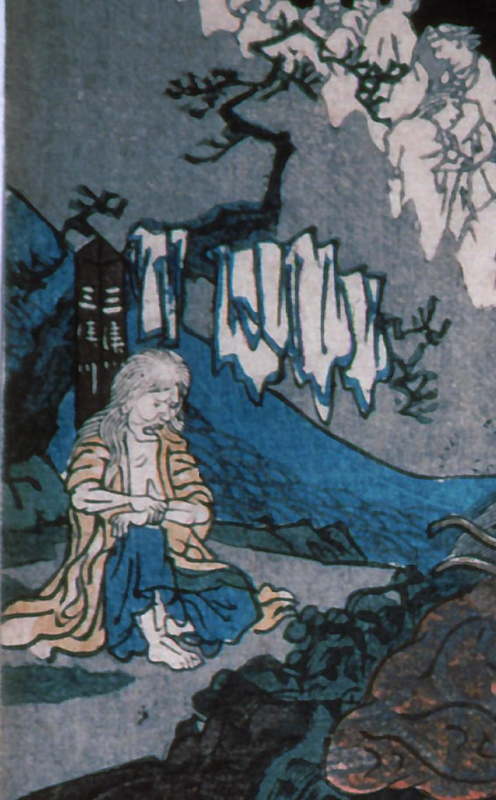

方膝を立て、座る老婆。黄色い衣をまとっている。後ろの松には複数の衣が掛かっており、その後ろには亡者が列をなしている。
著作者：歌川貞重／出典：親書誌：A5_hermitage_0001：（賽の河原；サイノカワラ）／日付：2011／資源識別子：A5_hermitage_0001_0003_0000
Copyright (c)2010- International Research Center for Japanese Studies, Kyoto, Japan. All rights reserved.